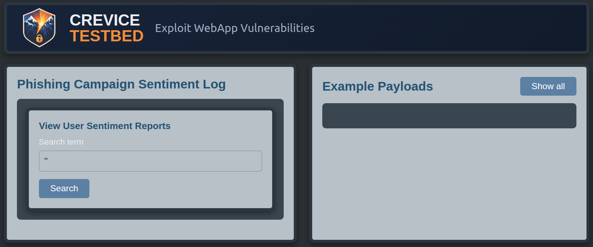

SQL Injection Leading to XSS How a Server-Side Injection Exposed a Client-Side Execution Path

Summary
While testing an application, I found that a SQL injection vulnerability exposed a conditionally reachable Cross-Site Scripting (XSS) sink.
The application rendered a client-side <script> only after a query returned a non-empty result set. When that condition was satisfied, it embedded
the original search input into an inline <script> element without proper encoding or sanitization.
Exploitation required control over both the server-side query and the client-side execution context. If the search input produced invalid SQL or the query returned no rows, the application didn't render the vulnerable script element. A working payload had to produce valid SQL, cause the query to return true, preserve the injected input, and then break out of the script element.
This behavior was later emulated in my intentionally vulnerable webapp, Crevice Testbed.
Discovery
This issue wasn't identified through automated scan findings. While reviewing scan logs, I noticed that one request had returned a 500 Internal Server Error. The scanner hadn't reported the response as a vulnerability, but the anomalous server error piqued my curiosity and inspired me to take a closer look.

An injected single quote ' caused a syntax error,
which indicated that the application might be incorporating user input directly into a SQL query. I reproduced the syntax errors, finding that ''
restored syntax and prevented errors from occuring, providing additiional evidence of a SQL injection vulnerability.

I refined the payloads until I obtained a working proof of concept that returned the SQL server's version. At that point, the issue appeared to be a standard error-message based SQL injection.

While developing a demonstration of impact, I tested both malformed SQL and valid SQL that changed the query's behavior. An injection that evaluated to true caused the application to follow a different execution path and build a client-side table.

During this process, I found that the application reflected my original input inside an inline
<script> element without proper encoding or sanitization. The input became part of a
JavaScript object used in building the table. If the SQL injection didn't produce a non-empty result
set or evaluate to true, the application never reached the XSS sink in the code path.
The Vulnerable Behavior
The following code represents the behavior reproduced in Crevice Testbed. In the original application, user input was incorporated directly into a SQL query:
WHERE responder_name LIKE '$search_term'Because this input wasn't sanitized, it was possible to manipulate query behavior and control whether the application returned results.
When the query succeeds and returns data, the application embeds the search term in a JavaScript configuration object:
var TableOptions = {
searchTerm: 'ENCODED_INPUT',
title: 'Search Results for: ' + 'RAW_INPUT'
};
The browser then uses this object to construct the results table. Although searchTerm contains encoded input, title contains the raw input.
The application only renders the table when the query has executed and returned at least one row. The emulation uses the following condition:
if ($search_executed && !empty($rows))This condition means the XSS sink is only reachable if the SQL injection produces a result that satisfies the above check.
The original application passed user-controlled data to a third-party table renderer. The library rendered data supplied by the application and relied on the caller to provide input that was safe for its output context. The vulnerability occured because the application placed raw user input directly into an executable script context, allowing the input to escape the intended structure and execute JavaScript.
Exploitation
A working payload had to meet both server-side and client-side constraints.
- Produce valid SQL
- Return at least one row-- true counts
- Preserve control over the injected input
Payloads that broke SQL syntax or returned no rows prevented the application from rendering the vulnerable script element. Once a payload satisfied these conditions, the application rendered the inline script as long as it lived within a SQL comment.
The following payload achieved JavaScript execution:
'or 1=1-- </script><script>alert(1)</script>This payload:
- provides a SQLi that always resolves to true
- comments out the rest of the original SQL query
- terminates the existing script element
- injects a new script element
- executes arbitrary JavaScript
Directly injecting JavaScript into the existing script context appears unviable.
The payload first has to satisfy the SQL injection requirements and the single quote ' used to break
out of the string context and introduce the SQLi also terminates the string in the original JavaScript.
The result is that OR in or 1=1-- is interpreted as javascript. Because or
is not a defined variable or operator in this context, it causes a syntax error that I was unable to resolve.

As a result, the payload terminates the existing <script> element
and injects a new one, ensuring execution occurs in a clean JavaScript context.

A carefully constructed payload may be able to satisfy both SQL and JavaScript constraints simultaneously, but I wasn't able to identify one.

Automated Testing Missed the Issues
The SQLi vulnerability wasn't identified during automated scanning due to assumptions about scan configuration.
I had an expectation that SQL injection testing was performed in the scan profile in use, but it wasn't. The vulnerability almost certainly would have been identified if the intended testing had been enabled. The database error was a strong indicator, and basic manipulation of the quote syntax confirmed that user input affected the query structure.
This gap demonstrates why teams must verify that scan configuration matches the coverage they expect. Testing scope should reflect the organization's threat model and risk priorities. That requires understanding what each scan profile tests, reviewing the policies and assumptions behind the configuration, and confirming its actual behavior.
The downstream XSS was less likely to be detected automatically because the vulnerable response existed only after a successful SQL injection returned a non-empty result set or evaluated to true. A scanner testing the unmodified request would never receive a response containing the vulnerable script context and have no opportunity to test that context for XSS.
Fully exploiting the issue required a compound payload that satisfied the SQL query and then broke out of the script element. DAST tooling generally tests common vulnerability patterns and doesn't generate payloads for every uncommon or application-specific interaction. A scanner might identify the SQL injection but would leave the dependent XSS unobserved.
If a scan were run against a request that already contained the SQL injection needed to reach the vulnerable response, the scanner may then identify the XSS issue.
A static analysis tool would be more likely to identify the underlying client-side issue. By tracing user-controlled input from the backend request into an executable JavaScript context, a SAST tool might flag the untrusted data as a potential XSS condition even without first satisfying the runtime query constraint.
Prevention
The server-side injection should be prevented by keeping user input out of SQL syntax using parameterization rather than concatenating $search_term
into the query. Invalid database input should also be handled without returning detailed SQL errors to the client.
The XSS issue requires output handling appropriate to the destination context. Any user-controlled value embedded in a JavaScript string or inline
<script> element needs to be encoded, escaped, or sanitized for that context before rendering rather than assuming
that a third-party renderer will make raw input safe.
These controls should be applied to values read from the database as well as values taken directly from the current request. Data does not become trusted merely because it came from an administrative or internal interface.
Testing controls should also verify, rather than assume, the vulnerability classes enabled in each scan profile. For this application, that verification would have exposed the missing SQL injection coverage.
Practice and Emulation
I recreated the vulnerabile behavior in Crevice Testbed, my intentionally vulnerable web application.
The lab guides testers through:
- identifying SQL injection through error responses
- understanding how query behavior affects application state
- recognizing conditional rendering of client-side code
- chaining server-side and client-side injection to achieve JavaScript execution
The exercise is intended to develop manual application-analysis skills, including the ability to follow a value across server-side and client-side contexts, rather than relying only on automated findings.

Final Note: Stored XSS Path
In the observed path, the application had to receive a successful SQL injection before it rendered the raw search input. The same unsafe script context could also support stored XSS if another interface allowed an attacker to write controlled data to the underlying dataset.
One Crevice Testbed Broken Access Control lab includes an administrative interface that inserts data into this dataset. In that scenario, a malicious insider who bypasses access controls could store a payload that executes when the application later renders it in the vulnerable context.
This highlights a common and risky assumption: that certain inputs are “trusted” because they originate from administrative or internal interfaces. In practice, access control weaknesses or insider threats can invalidate that assumption.
A more reliable approach is to treat all input as untrusted and ensure it is properly encoded or sanitized for the context in which it is rendered. Even inputs that don't appear to be user-controllable can become attacker-controlled under the right conditions.